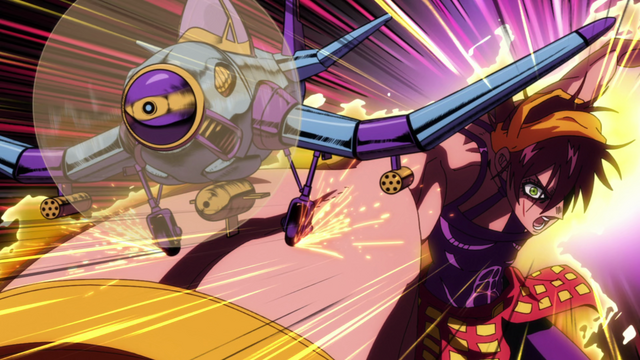
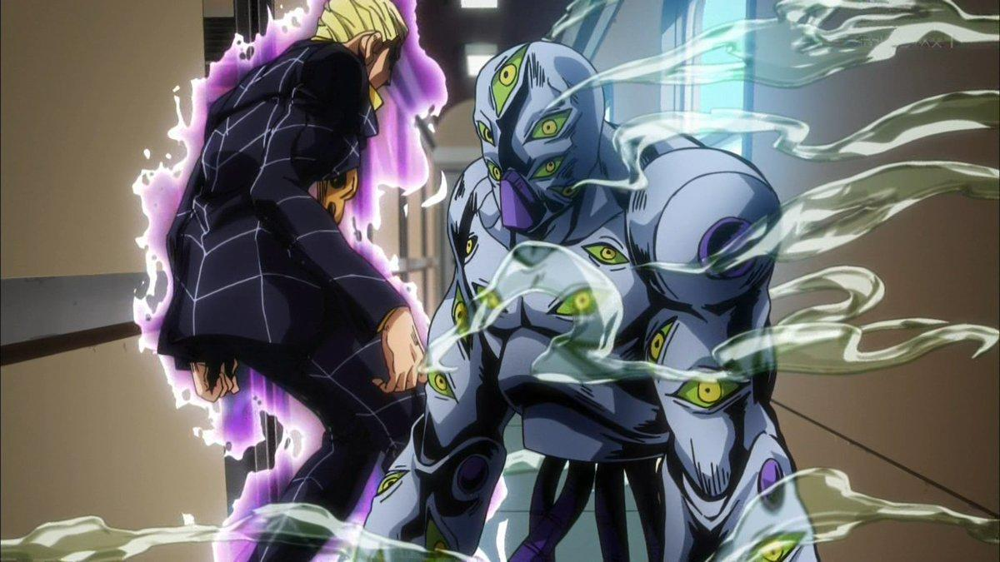

PARTE 4 • DIAMOND IS UNBREAKABLE
Killer Queen
Referência: Queen — “Killer Queen” (canção, 1974). O nome também inspira “Sheer Heart Attack”, a segunda bomba de Killer Queen, e “Bites the Dust”, sua terceira bomba.
Music is a Stand.
Confira algumas das referências musicais usadas nos nomes de Stands. Os nomes originais aparecem aqui para fins informativos.
Referência: Queen — “Killer Queen” (canção, 1974). O nome também inspira “Sheer Heart Attack”, a segunda bomba de Killer Queen, e “Bites the Dust”, sua terceira bomba.

Referência: Pink Floyd — “Shine On You Crazy Diamond”, faixa dividida em partes no álbum Wish You Were Here (1975).
Referência: Pink Floyd — “Echoes”, faixa de longa duração do álbum Meddle (1971). O Stand tem Acts, como a música é frequentemente dividida em seções.

Referência: The Rolling Stones — Sticky Fingers (álbum, 1971). Bucciarati cria zíperes, uma brincadeira visual com o zíper icônico da capa original do disco.

Referência: Jimi Hendrix — “Purple Haze” (1967), uma das músicas mais conhecidas do guitarrista.

Referência: Aerosmith, banda de rock norte-americana. O Stand de Narancia é um pequeno avião de combate.

Referência: Metallica, banda de heavy metal. Risotto Nero usa o Stand para manipular ferro e metal.

Referência: King Crimson, banda de rock progressivo. “Epitaph”, outra habilidade associada ao Stand, também é nome de uma música da banda.

Referência: Prince — The Gold Experience (álbum, 1995).

Referência: “Knockin' on Heaven's Door”, canção de Bob Dylan, popularizada também por versões posteriores.

Referência: Jimi Hendrix — “Stone Free” (1966). O Stand de Jolyne transforma seu corpo em fios.

Referência: AC/DC — “Dirty Deeds Done Dirt Cheap” (1976). O nome é frequentemente abreviado para D4C.